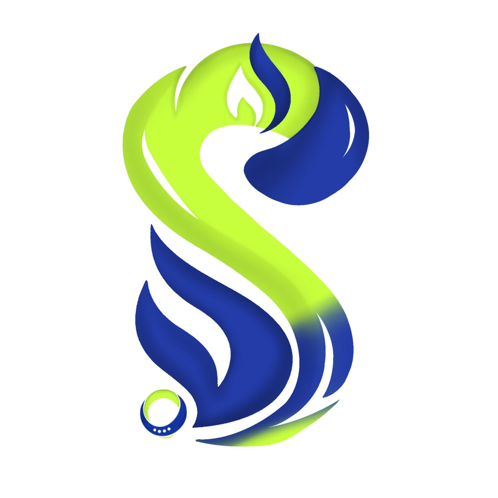
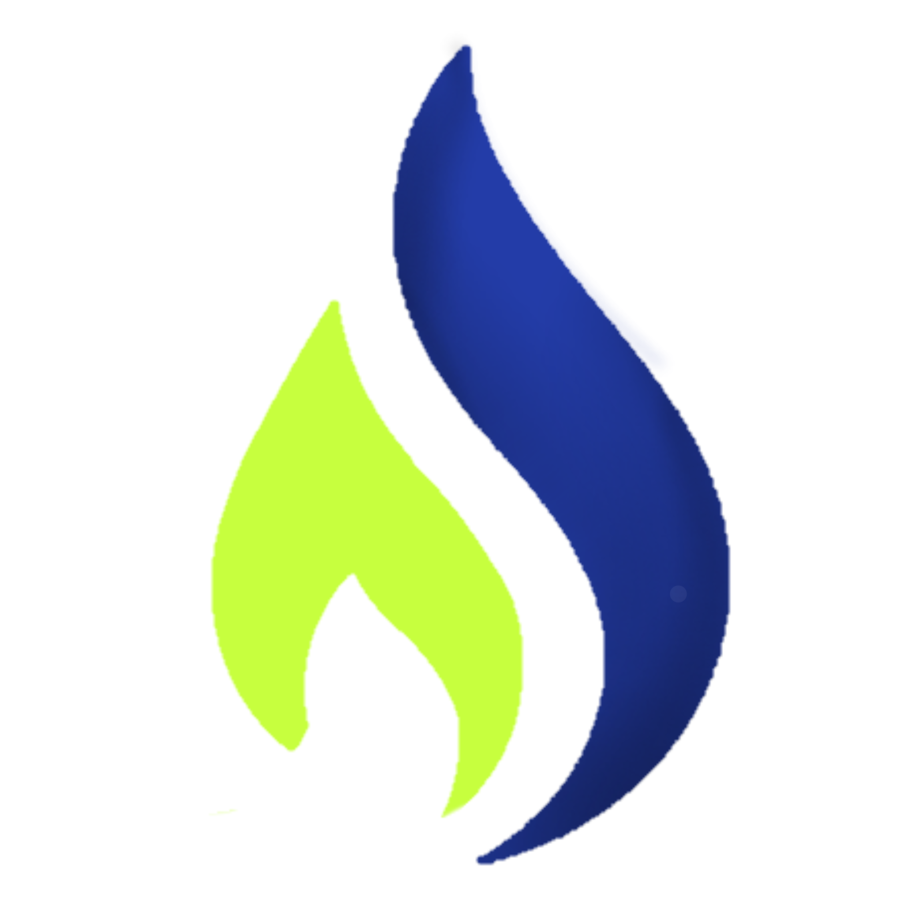
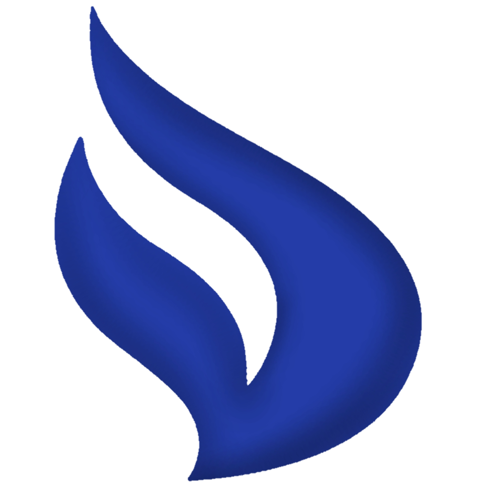
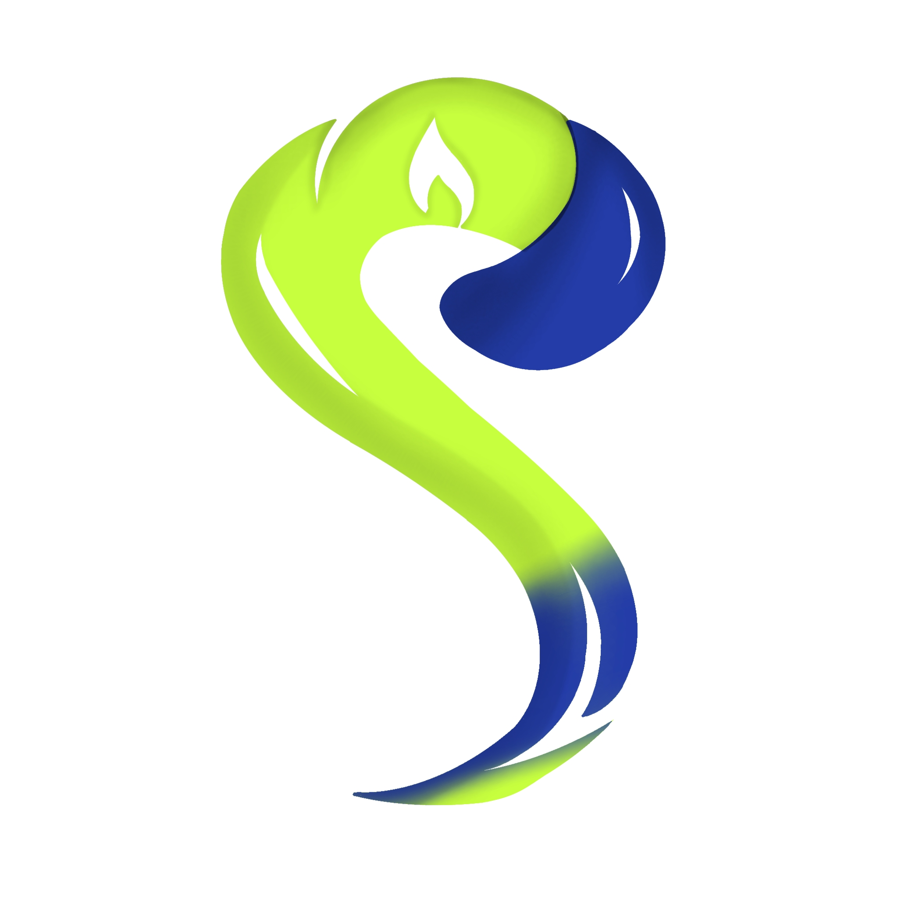
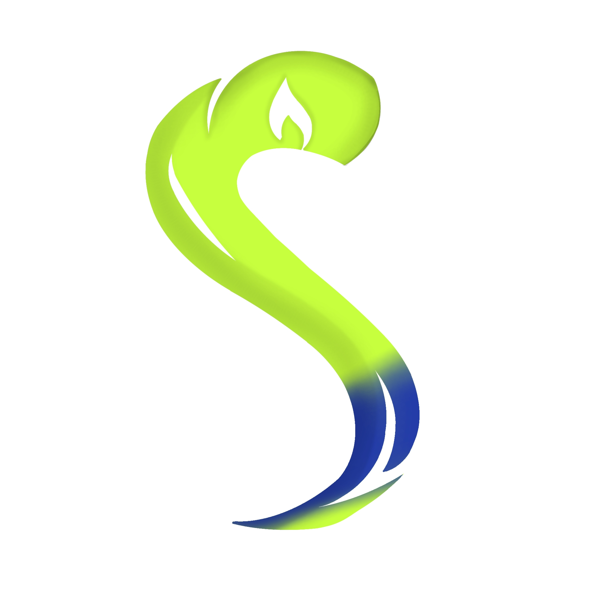
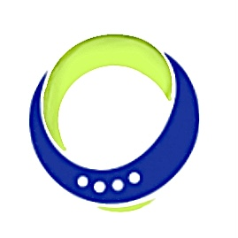
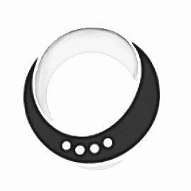
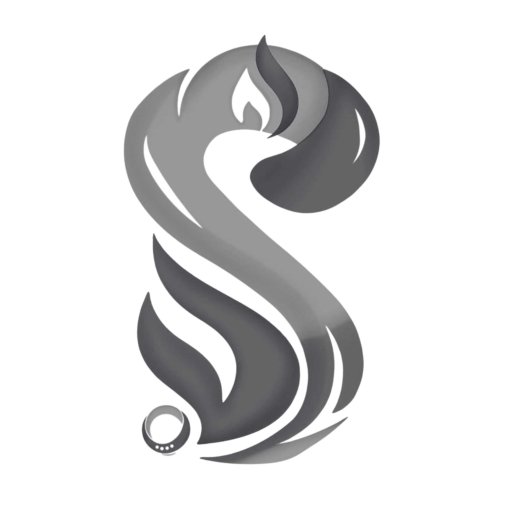

<!DOCTYPE html>
<html>

<head>
  <meta charset="UTF-8">
  <meta name="viewport" content="width=device-width, initial-scale=1">
  <title></title>
</head>

<body>
  
</body>

</html>
<!DOCTYPE html>
<html lang="id">
<head>
<meta charset="UTF-8">
<meta name="viewport" content="width=device-width, initial-scale=1.0">
<title>Filosofi Logo Sahitya Adiraya</title>

<style>
body {
    margin: 0;
    font-family: 'Segoe UI', sans-serif;
    background: linear-gradient(to bottom, #ffffff, #f5f1e8);
    color: #333;
    scroll-behavior: smooth;
}

/* HEADER */
header {
    text-align: center;
    padding: 60px 20px;
}

header img {
    width: 140px;
    animation: fadeZoom 1.2s ease;
}

header h1 {
    margin-top: 20px;
    font-size: 28px;
    animation: fadeUp 1s ease;
}

/* SECTION */
section {
    padding: 50px 20px;
    max-width: 900px;
    margin: auto;
}

/* WARNA */
.color-item {
    display: flex;
    align-items: center;
    margin-bottom: 25px;
    opacity: 0;
    transform: translateX(-30px);
    transition: 0.6s;
}

.color-box {
    width: 60px;
    height: 60px;
    border-radius: 12px;
    margin-right: 20px;
    transition: 0.3s;
}

.color-box:hover {
    transform: scale(1.1);
}

/* BENTUK */
.grid {
    display: grid;
    grid-template-columns: repeat(auto-fit, minmax(250px, 1fr));
    gap: 20px;
}

.card {
    background: rgba(255,255,255,0.8);
    padding: 20px;
    border-radius: 16px;
    backdrop-filter: blur(10px);
    box-shadow: 0 4px 15px rgba(0,0,0,0.08);
    transition: 0.3s;
    opacity: 0;
    transform: translateY(30px);
}

.card:hover {
    transform: translateY(-8px);
}

.card img {
    width: 50px;
    margin-bottom: 10px;
}

/* MAKNA */
.highlight {
    background: #f0eadf;
    padding: 25px;
    border-left: 5px solid #233ca8;
    border-radius: 10px;
    opacity: 0;
    transform: translateY(30px);
}

/* ANIMASI */
.show {
    opacity: 1 !important;
    transform: translate(0,0) !important;
}

@keyframes fadeZoom {
    from {opacity: 0; transform: scale(0.7);}
    to {opacity: 1; transform: scale(1);}
}

@keyframes fadeUp {
    from {opacity: 0; transform: translateY(20px);}
    to {opacity: 1; transform: translateY(0);}
}
</style>
</head>

<body>

<!-- HEADER -->
<header>
    
    <h1>Filosofi Logo Kabinet Sahitya Adiraya</h1>
    <p>Logo Kabinet Sahitya Adiraya merupakan representasi visual dari nilai, visi, dan arah gerak organisasi yang adaptif, progresif, serta berlandaskan asas kekeluargaan. Setiap elemen dalam logo dirancang untuk mencerminkan identitas organisasi yang dinamis namun tetap terarah dan berintegritas.</p>
        <!--Tab to edit-->
    <//p>
        <!--Tab to edit-->
    </p>
        <!--Tab to edit-->
    </>
</header>

<!-- FILOSOFI WARNA -->
<section>
    <h2>Filosofi Warna</h2>

    <div class="color-item">
        <div class="color-box" style="background:#C7FF3E;"></div>
        <div>
            <b>#C7FF3E</b><br>
            Melambangkan pertumbuhan, pembaruan, dan harapan. Warna ini mencerminkan semangat organisasi yang adaptif terhadap perubahan, inovatif, serta berorientasi pada perkembangan yang berkelanjutan.
        </div>
    </div>

    <div class="color-item">
        <div class="color-box" style="background:#233CA8;"></div>
        <div>
            <b>#233CA8</b><br>
            Melambangkan stabilitas, kedewasaan berpikir, dan profesionalisme. Biru menjadi fondasi yang menjaga arah organisasi agar tetap terstruktur dan konsisten dalam mencapai tujuan.
        </div>
    </div>

    <div class="color-item">
        <div class="color-box" style="background:#fff; border:1px solid #ccc;"></div>
        <div>
            <b>Putih</b><br>
            Melambangkan integritas, ketulusan, dan kejernihan visi. Warna putih menjadi penyeimbang antara dinamika dan kestabilan organisasi.
        </div>
    </div>
</section>

<!-- FILOSOFI BENTUK -->
<section>
    <h2>Filosofi Bentuk</h2>

    <div class="grid">

        <div class="card">
            
            <h3>Api</h3>
            <p>Melambangkan semangat utama, arah perjuangan, serta tujuan organisasi. Letaknya di bagian puncak menunjukkan bahwa setiap langkah organisasi selalu berorientasi pada tujuan dan dampak nyata.</p>
        </div>

        <div class="card">
            
            <h3>Lidah Api Biru</h3>
            <p>Melambangkan pengendalian diri, kestabilan emosi, serta kebijaksanaan dalam bergerak. Hal ini menunjukkan bahwa semangat yang dimiliki organisasi tetap berjalan secara terarah dan tidak kehilangan kendali.</p>
        </div>

        <div class="card">
            
            <h3>Gelombang</h3>
            <p>Melambangkan fleksibilitas dan kemampuan beradaptasi terhadap perubahan. Bentuk ini mencerminkan pergerakan organisasi yang progresif, dinamis, dan terus berkembang.</p>
        </div>

        <div class="card">
            
            <h3>Bentuk S</h3>
            <p>Melambangkan “Sahitya” yang berarti kebersamaan, persatuan, dan kekeluargaan. Alur yang menyatu menggambarkan perjalanan kolektif menuju tujuan bersama.</p>
        </div>

        <div class="card">
            
            <h3>Lingkaran Terputus</h3>
            <p>Melambangkan organisasi yang terbuka terhadap perubahan, tidak eksklusif, serta terus berkembang. Bentuk ini juga mencerminkan dinamika yang tetap berada dalam satu kesatuan.</p>
        </div>

        <div class="card">
            
            <h3>Titik-Titik</h3>
            <p>Melambangkan kesetaraan seluruh anggota organisasi. Setiap individu memiliki peran penting dalam membangun kekuatan bersama.</p>
        </div>

        <div class="card">
            
            <h3>Highlight Putih</h3>
            <p>Melambangkan transparasidan harapan, memberikan dimensi bahwa organisasi memiliki kedalaman nilai dan kejernihan tujuan.</p>
        </div>

    </div>
</section>

<!-- MAKNA KESELURUHAN -->
<section>
    <h2>Makna Keseluruhan</h2>

    <div class="highlight">
        Secara keseluruhan, logo Kabinet Sahitya Adiraya menggambarkan sebuah organisasi yang bergerak dengan semangat yang terarah dan berlandaskan nilai kebersamaan, di mana api sebagai simbol tujuan utama selaras dengan aliran dinamis yang mencerminkan kemampuan adaptasi dan perkembangan. Kehadiran lidah api biru menunjukkan bahwa setiap pergerakan tetap dilandasi oleh kestabilan dan kebijaksanaan, sementara bentuk lingkaran terputus menegaskan bahwa organisasi ini terbuka terhadap perubahan tanpa kehilangan kesatuan. Seluruh elemen tersebut berpadu dengan warna yang merepresentasikan pertumbuhan, profesionalisme, dan integritas, sehingga membentuk identitas organisasi yang tidak hanya progresif dan adaptif, tetapi juga mampu memberikan dampak nyata bagi mahasiswa sesuai dengan nilai dasar Sahitya Adiraya, yaitu persatuan, kekeluargaan, dan kebermanfaatan bersama.

    </div>
</section>

<!-- SCRIPT ANIMASI -->
<script>
const observer = new IntersectionObserver(entries => {
    entries.forEach(entry => {
        if(entry.isIntersecting){
            entry.target.classList.add("show");
        }
    });
});

document.querySelectorAll('.color-item, .card, .highlight').forEach(el => {
    observer.observe(el);
});
</script>

</body>
</html>